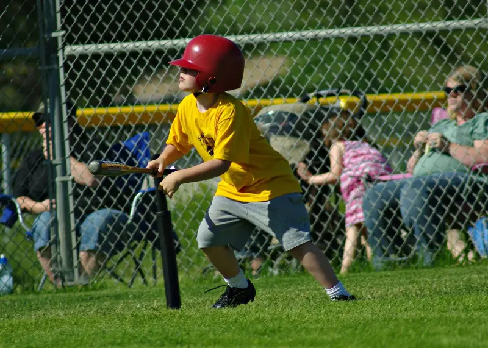
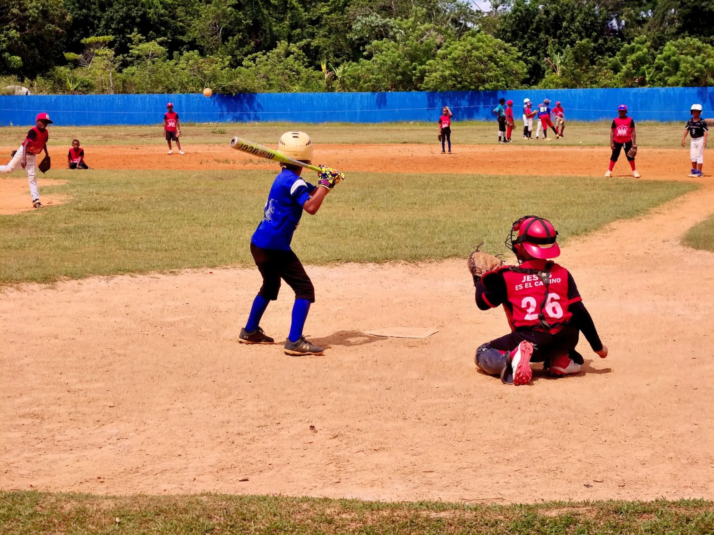
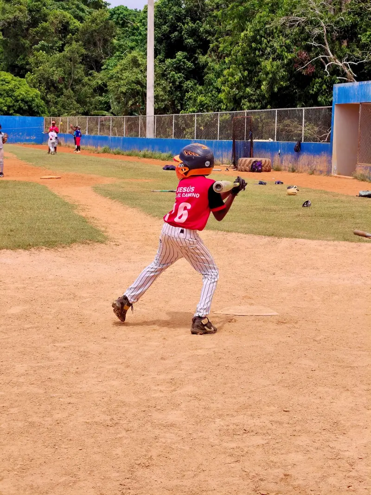
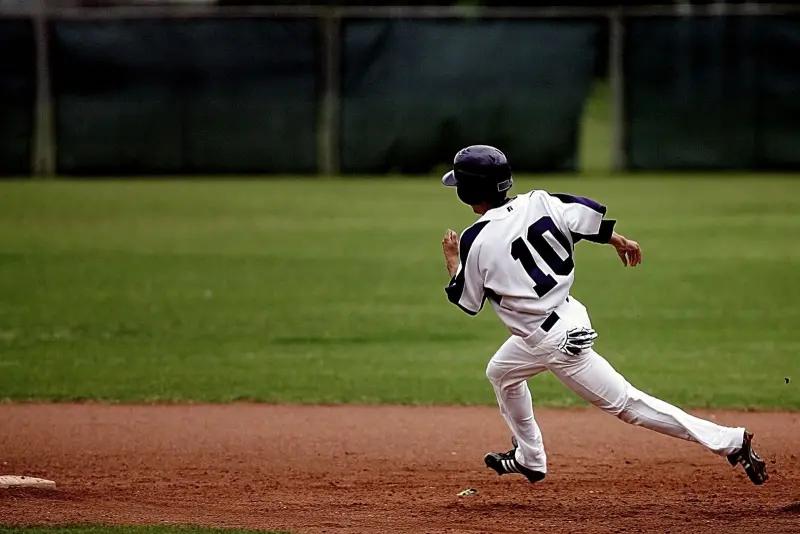
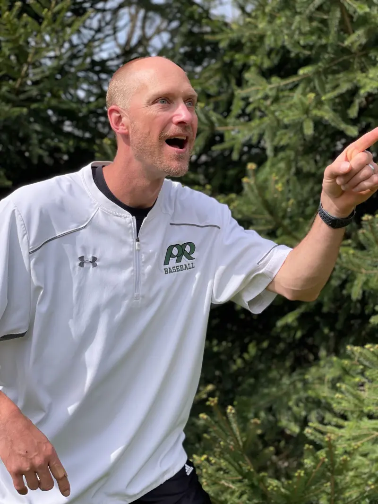
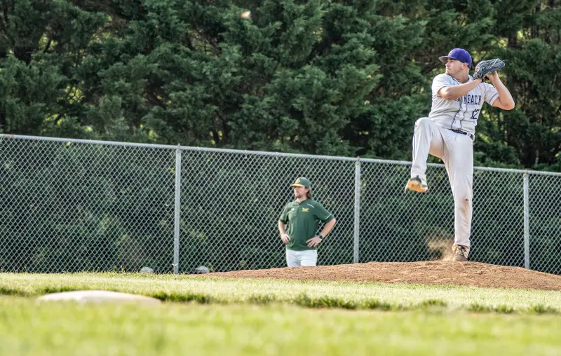
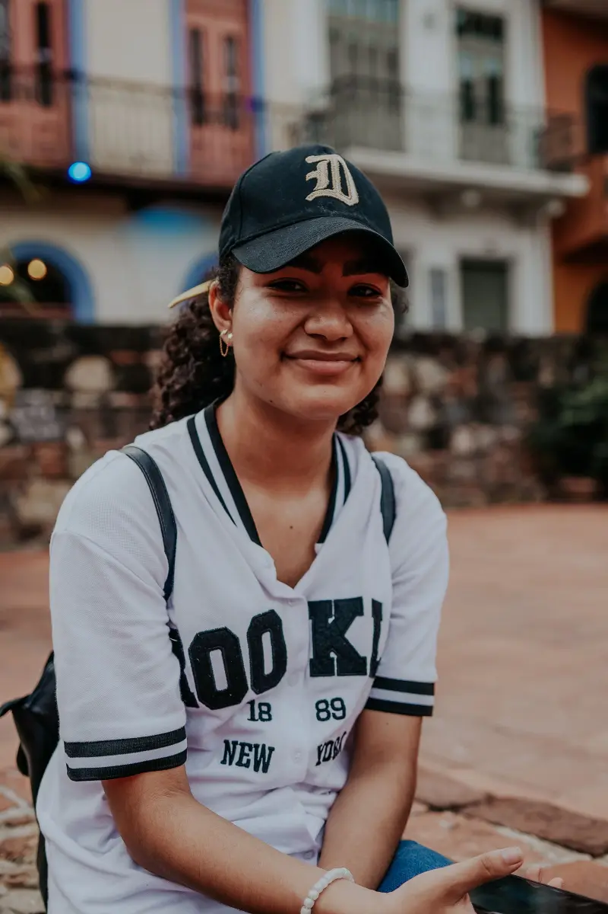
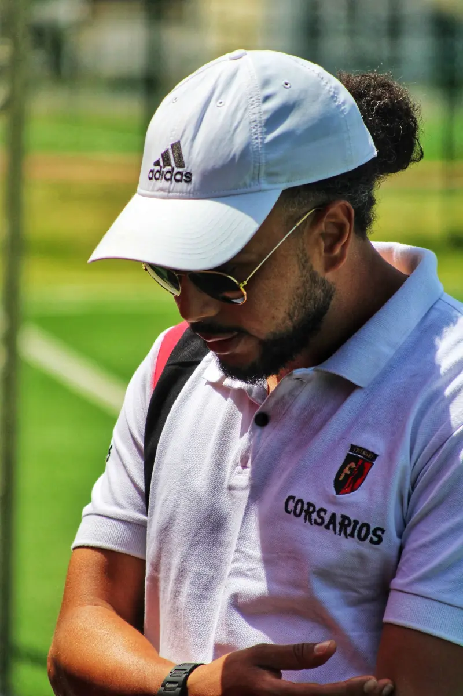
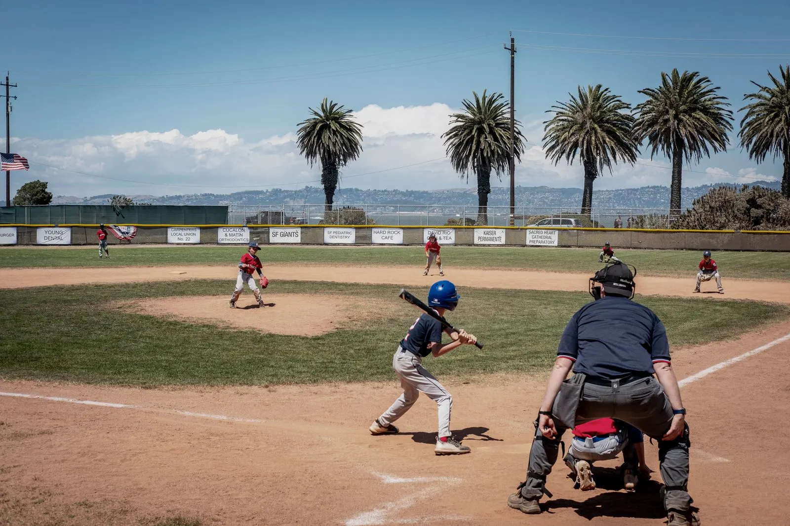

年長〜小2ティーボール
置いたボールを打って走る、投手のいない野球。ボールが怖い子も入りやすく、女の子クラスもあります。
- 練習
- 土 or 日 9:00–10:30
- 試合
- 春と秋の大会

KISHIWADA BASEBALL CLUB ／ EST. 2016
岸和田市の少年野球クラブ ／ 年長〜小6保護者は応援だけ・週1回から・はじめての子が7割
きしわだベースボールクラブは、2016年に岸和田市で始まった年長〜小6の少年野球クラブです。在籍の7割がはじめての子。保護者の方は応援だけ、練習は週1回から。「打てた！」「とれた！」を、毎週ひとつずつ増やしていきます。
どのチームも、体験は何回でも無料です。

年長〜小2置いたボールを打って走る、投手のいない野球。ボールが怖い子も入りやすく、女の子クラスもあります。

小3・小4投手が投げる野球に移ります。守備位置は固定せず、全員が全ポジションを経験。捕る・投げる・打つを2年かけて。

小5・小6泉州地区の学童大会に出場。ベンチ入り全員が出ます。中学で野球を続けたい子には、進路の相談にも乗ります。
両方に来る必要はありません。水曜の夕方は希望制です。
日本スポーツ協会の公認コーチ資格を全員が持ち、毎年研修を受けています。

公認コーチ3・指導歴14年。「保護者は応援だけ」のクラブを作るため2016年に設立。

公認コーチ1。社会人野球の現役投手。投げ方のケガ予防を担当。

公認コーチ1・保育士。年長〜小2と女の子クラスを担当。

公認コーチ1。卒団生の保護者。スコアと大会の申込を担当。
できたことを、その日のうちに言葉にする。
それだけで、子どもは次の週も来たくなります。
入団前にいちばん聞かれることを、先にお答えします。
飲み物は各自で。差し入れの当番も集金もありません。
保護者の方に講習を受けていただくことはありません。
車出しの割り当てはありません。駅から徒歩10分、駐車場あり。
両方に来る必要はありません。水曜の夕方は希望制です。
帽子がかぶれれば、どんな髪型でも大丈夫です。
ご家庭で用意するのはグローブだけ。靴は最初はスニーカーで。
公式戦も練習試合も、出場時間を学年内で均等にします。
月謝・年会費・ユニフォーム代。あとから増える費用はありません。
表示はすべて税込です。遠征費はありません（大会はすべて泉州地区内）。
2年目からは月謝と年会費のみ（年72,600円）。
仕事があるので、当番のあるチームは難しいと思っていました。ここは日曜の朝に送って、昼に迎えに行くだけ。1年続いています。
小2男子の母毎試合出られるので、本人が「次はここを直す」と自分で言うようになりました。家で素振りを始めたのは入団3か月目です。
小5男子の父ティーボールは女の子が3人いて、すぐになじみました。田村コーチが女性なのも、本人には大きかったようです。
年長女子の母入れます。在籍の約7割がはじめてから始めています。ティーボールは投手がいないので、ルールも最初はほとんど要りません。
応援に来ていただくだけです。お茶・審判・スコア・車出し・グラウンド整備は、コーチとクラブスタッフが行います。
大丈夫です。土曜と日曜は同じ内容なので、どちらか1日で足ります。
出られます。ベンチ入りした選手は全員が出場します。勝敗より、全員が出ることを優先しています。
入れます。ティーボールには女の子クラスがあり、ジュニアにも女子が在籍しています。

体験は何回でも無料です。グローブがなくても貸し出します。服装は動きやすいものと運動靴。保護者の方は見学だけでも、一緒にキャッチボールをしても大丈夫です。
LINEで相談・予約する